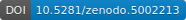
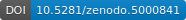
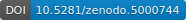
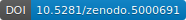
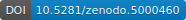
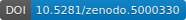
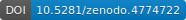
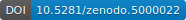
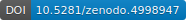

About
I am passionate about web3 technologies and the opportunity they present to create a more equitable and sustainable world for all its inhabitants. Since 2016, I have engaged in R&D projects using the Cardano, Cosmos, Algorand, Filecoin, Ethereum, and Bitcoin networks.
I am the project lead for:
- Landano: an Open Cadastre integrated with NFTs to create legally-binding land title registrations.
- Orcfax: trustworthy, decentralized blockchain oracles.
My area of expertise is applying records management standards and archival science research to requirements for fully decentralized architectures. I have been working with technology for archival collections since earning my Master's degree in Archival Science in 1997. I am the founder of Artefactual Systems and the creator of the free and open source Archivematica and Access-to-Memory (AtoM) software applications, the most widely deployed archives management solutions in the world.
I have worked with public sector institutions worldwide to provide industry-standard recordk-keeping technology and digital preservation services that range from writing strategy reports, analyzing system requirements, designing system architectures, developing software, and managing open-source projects. I have been a frequent conference speaker on these topics.
I am a Distinguished Alumnus of the University of British Columbia’s iSchool program. I previously worked at UBC’s iSchool as an Adjunct Professor and as the Project Coordinator for International Research on Permanent Authentic Records in Electronic Systems (InterPARES Project). I also hold a Certificate in Software Engineering from UBC.
Selected publications and presentations
What is the real world? (2022) Medium.com
Ten web3 system requirements from Moxie Marlinspike’s post (2022) Medium.com
Archivematica's original design principles Archivematica architectural decision records (2021)
Archival requirements for the decentralized web Decentralized Web Summit. San Francisco, U.S.A. (2016)
Archives, technology, and innovation Association of Canadian Archivists conference. Montreal, Canada (2016) 
Decentralized autonomous collections (2016)
Introduction to blockchain and recordkeeping Recordkeeping Rountable. Sidney, Australia (2016)
Archivatopia: the akashic record, what if? Association of Canadian Archivists conference. Victoria, Canada (2014)
Realizing the Archivematica vision: delivering a comprehensive and free OAIS implementation 10th International Conference on Preservation of Digital Objects (iPres) Lisbon, Portugal (2013) 
Archivematica and the Open Source Mindset for Digital Preservation Systems The Signal - Library of Congress (2012)
The community driven evolution of the Archivematica project 9th International Conference on Preservation of Digital Objects (iPres) Toronto, Canada (2012) 
Archivematica concept poster International Digital Curation Conference. Chicago, U.S.A. (2010) 
Using micro-services and open-source software to deliver a comprehensive digital curation solution 7th International Conference on Preservation of Digital Objects (iPres) Vienna, Austria (2010) 
Lowering the barrier to best practice digital preservation IS&T Archiving conference. The Hague, The Netherlands (2010) 
Creating a comprehensive digital preservation system (transcript) The National Archives Center for Advanced Systems and Technologies. Washington, U.S.A (2010)
The ICA-AtoM project and technology Association of Brazilian Archives. Rio de Janeiro, Brazil (2009) 
The anatomy of a digital information object (2007)
What is information anyway? (2007) 
Archival materials: a practical definition (2007) 
The information model to end all information models (2006)
Does my digital archives need a digital repository system? (2006)